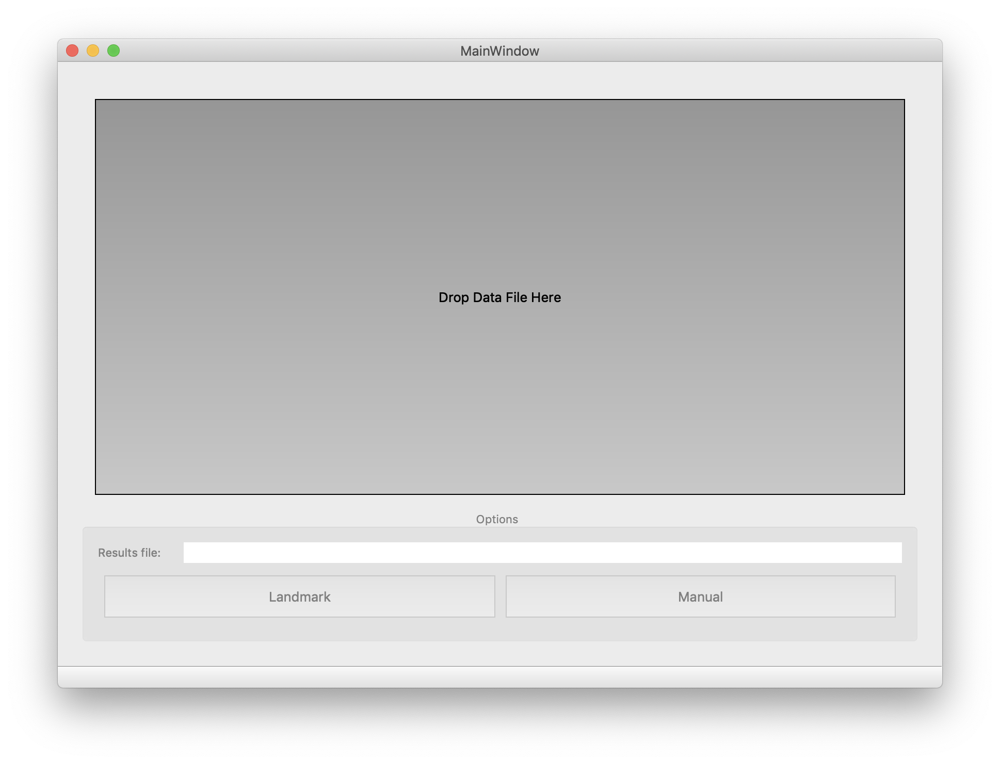

Preliminaries¶
Launching¶
The easiest way to launch the GUI is from Python or iPython:
>>> import mwarp1d
>>> mwarp1d.launch_gui()
launch_gui optionally accepts various input arguments as described here.
Alternatively you can launch the GUI using ./mwwarp1d/ui/main.py as follows:
python main.py
Importing data¶
After launching mwarp1d, its main window will appear:
{kind=link}
To import data, drag-and-drop a CSV file on the “Drop Data File Here” box.
The CSV file must be formatted as follows:
Only numbers (no column or row headers)
Rows = observations
Columns = domain nodes
Thus eight observations, each with 100 domain nodes, would require an (8 x 100) CSV file.
Specifying output directory¶
After dropping a CSV data file on the “Drop Data File Here” box, the output (Results) file will be automatically set to mwarp1d.npz, in the same directory as the CSV folder, like this:
{kind=link}
To change the output directory and/or results file name, simply click on the label. A file dialog will appear.
Note that all warping results are automatically saved to the NPZ file.
This NPZ file can be used to restore previous sessions.